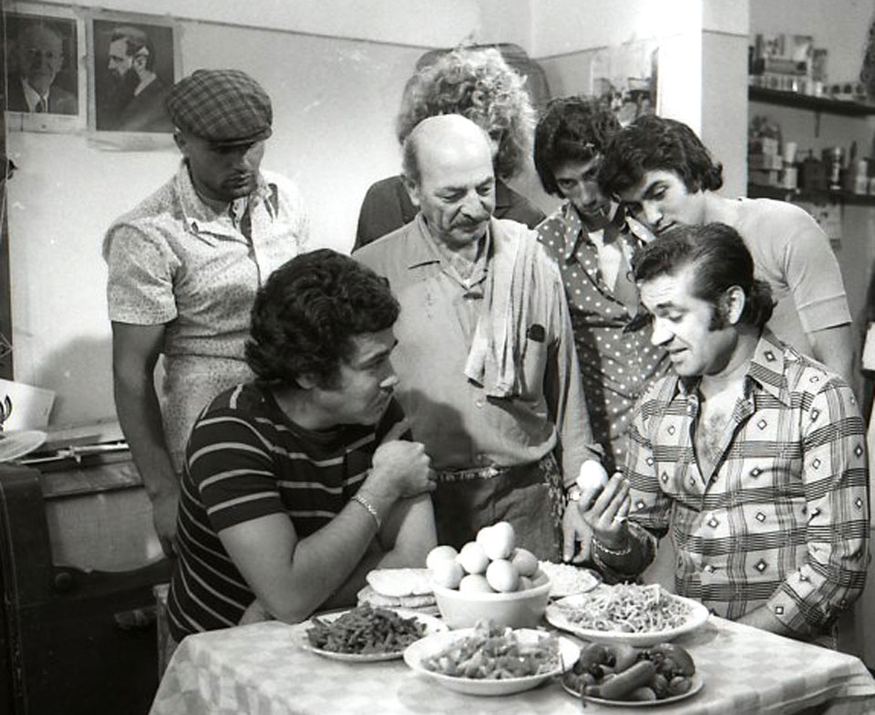
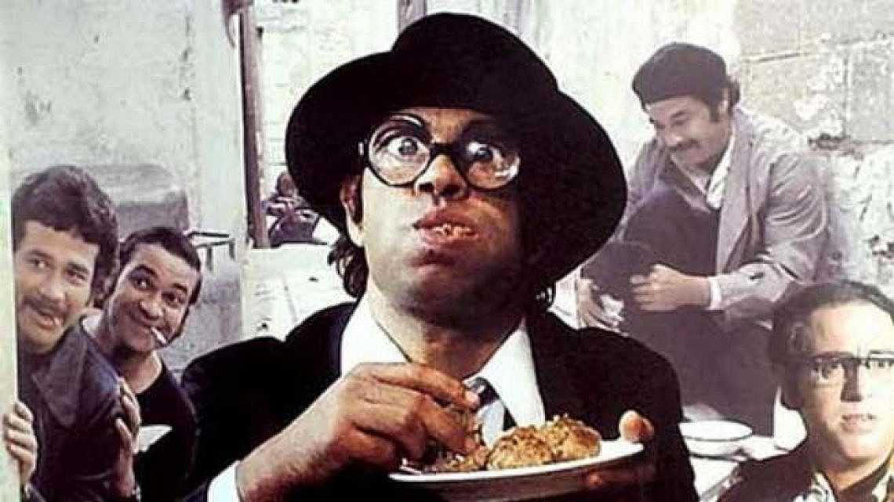

My Photos





זאב רווח הוא שחקן קולנוע, טלוויזיה ותיאטרון, קומיקאי, זמר, מפיק, תסריטאי ובמאי קולנוע ישראלי. זוכה
שלושה פרסי
אופיר - שניים כשחקן הראשי הטוב ביותר ואחד על מפעל חיים. נמנה בין האישים הבולטים והחשובים בקולנוע הישראלי.
הוא נולד בשנת 1940 ברבאט שבמרוקו, והוא הבן הבכור מתוך שמונה ילדים. בגיל שמונה עלה עם משפחתו לישראל. בתחילה
התגוררה המשפחה במעברה בחיפה. מגיל תשע עד גיל 13 התגורר עם משפחתו בשכונת מוסררה, שבירושלים. אביו אף הקים בשכונה
זו בית כנסת. מאוחר יותר עברה המשפחה לשכונת קריית היובל, בירושלים. מגיל 13 למד בישיבה התיכונית-חקלאית שבכפר
חסידים. את שירותו בצה"ל עשה בנח"ל.
רווח מזוהה פוליטית עם הימין, ובפרט מפלגת הליכוד. בשנת 1992 הופיע בתשדירי הבחירות של המפלגה. בשנת 2003 התמודד על
מושב במועצת עיריית רמת גן מטעם רשימת הליכוד. באפריל 2018 הדליק משואה בטקס הדלקת המשואות של חגיגות שנת ה-70
למדינת ישראל. הוא בוגר המחזור הראשון של בית הספר למשחק "בית צבי".
רווח שיחק בלמעלה מארבעים סרטי קולנוע, ואף ששיחק בתפקידים ראשיים בסרטים ובהצגות רבות, הוא בולט במיוחד ככוכב של
ז'אנר סרטי הבורקס. בסרטים אלה נהג רווח לגלם דמויות סטריאוטיפיות של אנשים בשולי החברה המפלסים את דרכם בהשתלשלות
אירועים קומית, המורכבת בדרך כלל מרמאויות קטנות, התחפשויות ועוד.
סרטו הראשון של זאב רווח היה "ימים טובים" שיצא בשנת 1976, אשר כיכב בסרט זה בתפקיד הראשי.
אחיו הצעיר אורי רווח שר את שיר הפתיחה בסרט, ובשנת 2021 הוציא הזמר אייל גולן קליפ חדש – "ימים טובים".
שיר זה הוא שיר חידוש לשיר המקורי. בקליפ השתתף זאב רווח עצמו.

Millions of users
The "read-only" web
Connect information - The Web
Static connect - one way interaction
Billions of users
The "read-write" web
Connect people - Social Web
Two way communication & collaborative approach
Trillions of users
The "read-write-execute" web
Connect knowledge - Data Web
Personalaized experience - using AI tools
User writes a specific URL and gets a website
User writes "Ben Gurion University" as a query in a search engine and gets relevant results
User writes "Ben Gurion University" as a query in a search engine and gets more precise relevant results because of the automatic tagging